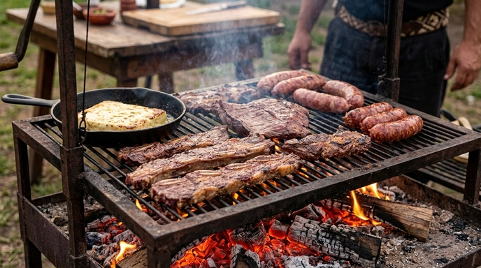
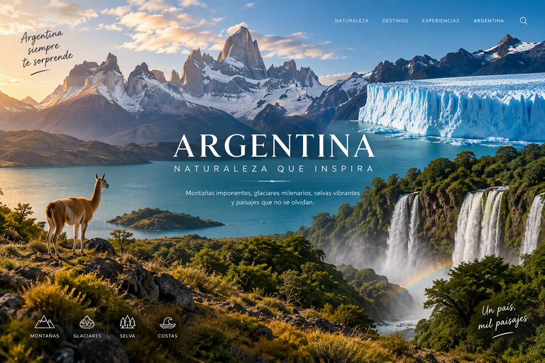
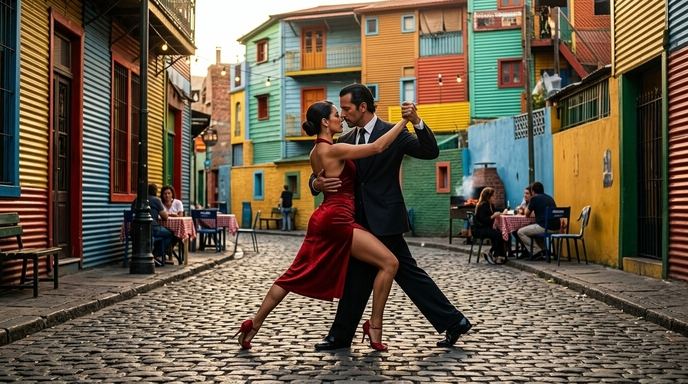

Descubrí la Argentina: Pasión, Naturaleza y Cultura
Bienvenidos a un viaje fascinante por el corazón del fin del mundo. La Argentina no es solo un destino en
el mapa; es una experiencia que despierta los sentidos, desde el ritmo vibrante de sus ciudades hasta la
inmensidad silvestre de sus paisajes patagónicos y subtropicales.
Radiografía del País: Datos Esenciales
-Ubicación y Extensión: Ubicada en el extremo sur de Sudamérica, es el octavo país más grande del
mundo y el segundo de habla hispana. Su territorio se extiende desde la cordillera de los Andes
hasta el océano Atlántico.
-Diversidad Geográfica: Alberga algunos de los paisajes más contrastantes del planeta, incluyendo los
imponentes glaciares de la Patagonia, las imponentes Cataratas del Iguazú en el noreste, los viñedos
de altura en Cuyo y la vasta llanura pampeana.
-Identidad y Cultura: Una tierra de profundas raíces culturales donde conviven las tradiciones
gauchescas con la vanguardia urbana, famosa mundialmente por su tango, su literatura, su gastronomía
y su pasión por el fútbol.
-Población y Capital: Con una población multicultural moldeada por una rica historia de inmigración,
tiene como capital a la Ciudad Autónoma de Buenos Aires, un centro cultural y financiero de
referencia internacional.
Aspectos Fundamentales y Representativos de la Argentina
Su Gastronomia y Cultura del Asado

El asado a la parrilla, pilar indispensable de la gastronomía y las reuniones familiares
en Argentina
La gastronomía argentina destaca internacionalmente por su alta calidad en carnes vacunas y por el
asado como un ritual social único. Más que una simple comida, el asado representa un punto de
encuentro semanal entre familiares y amigos alrededor del fuego y las brasas. Acompañado
tradicionalmente por chimichurri, empanadas y un buen vino Malbec, este encuentro culinario refleja
la calidez y el espíritu hospitalario que caracterizan a la sociedad argentina
Su Naturaleza y Paisajes Excepcionales

Argentina: naturaleza sin límites, paisajes que inspiran y emocionan
Explora la extraordinaria diversidad natural de Argentina a través de paisajes que combinan montañas
majestuosas, glaciares imponentes, selvas exuberantes y lagos cristalinos. Una invitación a
descubrir destinos únicos donde la naturaleza se expresa en toda su magnitud.
El Tango y la Identidad Cultural

Pareja ejecutando un baile de tango en un rincón tradicional de Buenos Aires
Nacido a orillas del Río de la Plata a fines del siglo XIX, el tango es una de las expresiones
culturales más emblemáticas de Argentina, declarada Patrimonio Cultural Inmaterial de la Humanidad.
Fusionando música, poesía y una danza llena de pasión y elegancia, el tango evoca la historia, la
nostalgia y la vida urbana del país. Su presencia viva en las tradicionales milongas y escenarios de
Buenos Aires continúa deslumbrando y conectando a personas de todo el mundo